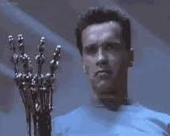

Robotics Engineering & Autonomous Systems
Dual serial-bus servo system engineered for high joint torque, rapid grip response, and telemetry.
Managing our alronix-arm codebase on GitHub with custom Python tooling under Robot-Arm/ for device discovery, calibration, and live teleoperation.
Learned Git collaboration with PRs and branch isolation; built servo_core.py for FEETECH ST3215 serial-bus control.
ping_servos.py ports scans USB adapters; ping tests servo response across IDs 1–6 at 1.0 Mbps.
Dynamic ID assignment and persistent travel bounds stored in angle_limits.json to prevent mechanical overtravel.
Real-time motor jogging via keyboard_control.py and bilateral leader-follower mirroring via mirror_servos.py.
Three to four days of recurring calibration errors, drift desyncs, and the deep engineering intuition gained from solving them.
Struggled continuously with initial LeRobot setup. Every calibration pass drifted, threw communication timeouts, or misread zero offsets. We were trapped in an edit-calibrate-fail loop for days.
Stopped guessing and dissected the hardware: TTL bus timing at 1.0 Mbps, encoder center steps (2048/4096), and mechanical backlash vs. software expectation.
Mastered LeRobot’s native calibration workflow: accurately establishing joint boundaries, storing verified calibration profiles, and achieving stable leader-follower teleoperation.
“We spent 3 to 4 days stuck in a calibration loop. What felt like lost time became our steepest learning curve in hardware-software synchronization.”
Capturing multimodal teleoperation demonstrations, training Action Chunking Transformers, and deploying closed-loop autonomous policies.
Synchronized 50 Hz data collection across leader-follower arms. Simultaneously logging 6-DOF joint positions and dual USB camera streams (overhead + wrist) into native LeRobot dataset format.
python -m lerobot.record --robot-type so100 --fps 50
Supervised training using Action Chunking with Transformers (ACT). A CVAE encodes human demonstration variability while the transformer decoder predicts 50 consecutive future actions to prevent compounding errors.
python -m lerobot.train --policy act --batch-size 8
Live deployment on the physical follower arm. The pretrained ACT policy processes real-time camera frames and proprioceptive joint state at 50 Hz, executing autonomous manipulation with zero human intervention.
python -m lerobot.eval --policy act --eval-episodes 10
Applying our bus telemetry, calibration rigor, and imitation learning to engineer a compact tabletop robotic arm that organizes workstations with human-aware collision avoidance.
A quiet, compact tabletop manipulator engineered to live on the workstation, autonomously sorting cables, stationery, mugs, and tools without disturbing fragile items.
Workstations are unpredictable: hands reach for coffee and phones move. The arm tracks a continuous 3D safety envelope with graded, real-time safety responses:
When a hand or obstacle enters the trajectory, the motion planner calculates a collision-free alternate spline in real-time (<15ms) to bypass the obstacle without pausing.
If spatial clearance narrows, the controller throttles joint speed and torque by 60–80%, drastically reducing kinetic energy while maintaining precision micro-adjustments.
Immediate sub-10ms motor stop. Joint torque drops into a compliant backdrivable floating state, eliminating pinch risks and preventing tipped-over drinks.
Candid reflections on hardware realities, communication bottlenecks, and lessons learned building the SO-101 autonomous stack.
“Robotics taught me that algorithms don’t matter until communication is rock solid. Half our battles weren’t the AI—they were serial port drops, USB permissions, and coordinating Git workflows across six developers.”
“Daisy-chaining 6 serial servos on a shared 1 Mbps TTL bus sounded simple on paper until voltage drops and bus collisions rebooted the arm mid-stroke. Real hardware never forgives bad wiring.”
“CAD is an idealized world. Physical 3D prints have layer shrinkage, joint friction, and gear backlash. Calibrating physical zero so the gripper didn’t bind on its own brackets was a major reality check.”
“Those 4 days stuck in the LeRobot calibration loop tested our sanity. But manually diagnosing 4096-step encoder registers and EEPROM offsets gave us an intuitive feel for servo telemetry.”
“Watching the ACT transformer policy execute its first autonomous pick-and-place—taking dual camera frames and moving the follower arm with zero human input—made every failed training run worth it.”
“Simulators are forgiving; physical teleoperation is brutal on motors. Implementing slew-rate limits and monitoring real-time servo thermals saved us from burning out ST3215s during long recording sessions.”
